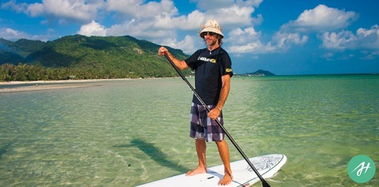
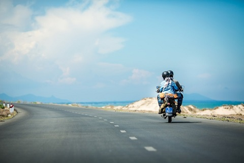
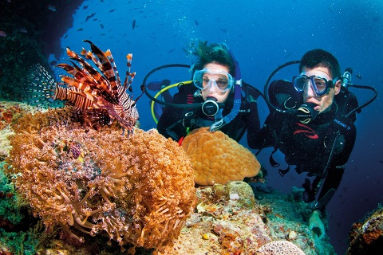
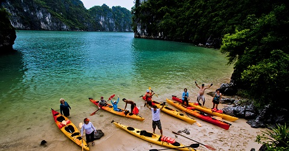
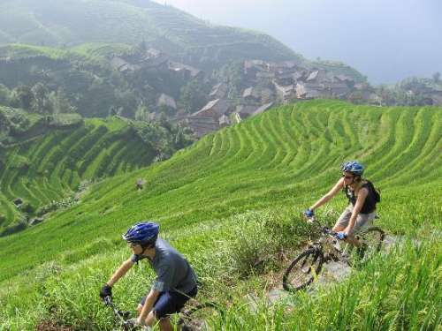

5 Paddle Board in Mui Ne
Not too far from Ho Chi Minh, along the east coast you’ll find Mui Ne bay. Slowly finding its feet as one of the countries best beach resorts Mui Ne is one of the best places in Vietnam to try your hand at paddle boarding. A cross between surfing and kayaking, paddle boarding is a great form of exercise, but more than that – it’s amazing fun! Head to Mui Ne to take advantage of the great waves and it’s proximity to the city.

4 Drive a moto from Ha Noi city to Ho Chi Minh city!!
As anyone who’s ever been to Vietnam will be able to tell you, they’re big fans of motorbikes and mopeds – crossing the road in Hanoi and Ho Chi Minh is an adventure in itself.Motorcycle is the perfect way to get around Vietnam and there are a huge number places where you can independently hire a bike or, if you’d rather, pay a guide and join a group motorbike tour.Join the busy highway 1, or take the scenic route past the farms lands of Phong Nha and absorb the beauty of Phong Nha-Ke Bang World Heritage National Park. Stop off in Hue for and sample some local delicacies before some beach time in the costal city of Nha Trang as well as so much more. This is the ultimate in travel freedom and adventure and the perfect way to discover a country that needs to be experienced with every one of your senses.

3 Go diving in Phu Quoc island
Imagine an island paradise with palm trees, golden sands and turquoise oceans alive imagined Phu Quoc.This beautiful Vietnamese island (which is actually geographically closer to Cambodia) is quiet, with just a small community of backpackers passing through. It’s also a great place to go diving – the best place in all of Vietnam in fact.

2 Kayak around the islands of Ha Long Bay
Ha Long Bay is impressive, very impressive, so impressive that it was named as a UNESCO World Heritage Site and is one of the most visited areas of Vietnam.Hundreds of limestone islands protrude from the, usually misty, bay creating one of the most beautifully atmospheric landscape scenes in not only the country, but the whole of Southeast Asia, and there’s no better way to experience it that from the water.Rent a kayak and paddle between the islands taking in the views and exploring the hidden caves as you go.

1 Cycle in Sapa
Sapa is probably the kind of place you think of when you imagine what Vietnam is like as someone who’s never been there.Like how people imagine the long boats and clear waters of the beaches of Thailand or the neon lit streets of New York City. When it comes to Vietnam, it’s likely to be the rolling, green rice paddies of Sapa.And the very best way to explore these, often uneven, landscapes? By bicycle of course! Rent a bike and take yourself on a trip through farm land and field, through local villages and to small street cafes serving the most basic (but also the most authentic and delicious) examples of Vietnamese food.
